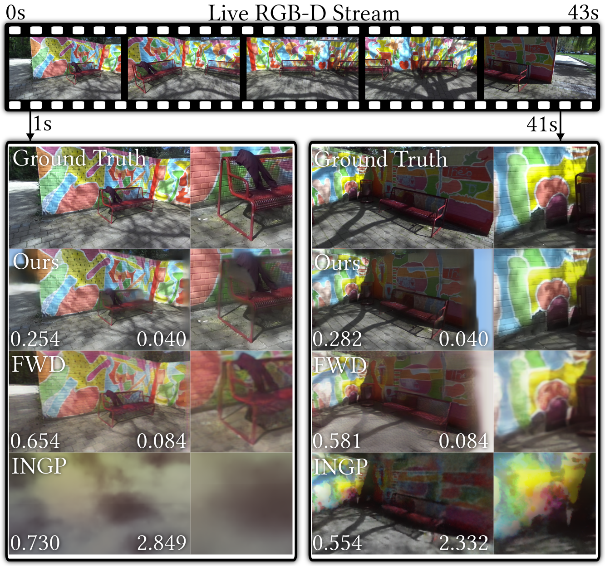
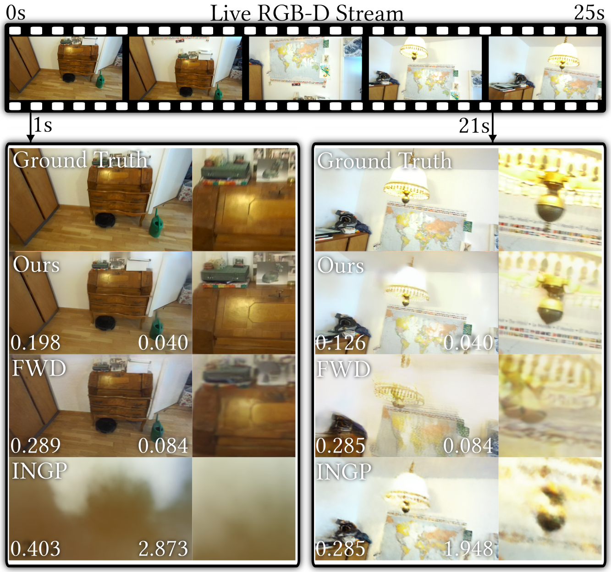

LiveNVS: Neural View Synthesis on Live RGB-D Streams Siggraph Asia 2023
-
Laura Fink
FAU Erlangen-Nürnberg
Fraunhofer IIS -
Darius Rückert
FAU Erlangen-Nürnberg
Voxray GmbH -
Linus Franke
FAU Erlangen-Nürnberg
-
Joachim Keinert
Fraunhofer IIS
-
Marc Stamminger
FAU Erlangen-Nürnberg
Abstract
Existing real-time RGB-D reconstruction approaches, like Kinect Fusion, lack real-time photo-realistic visualization. This is due to noisy, oversmoothed or incomplete geometry and blurry textures which are fused from imperfect depth maps and camera poses. Recent neural rendering methods can overcome many of such artifacts but are mostly optimized for offline usage, hindering the integration into a live reconstruction pipeline.
In this paper, we present LiveNVS, a system that allows for neural novel view synthesis on a live RGB-D input stream with very low latency and real-time rendering. Based on the RGB-D input stream, novel views are rendered by projecting neural features into the target view via a densely fused depth map and aggregating the features in image-space to a target feature map. A generalizable neural network then translates the target feature map into a high-quality RGB image. LiveNVS achieves state-of-the-art neural rendering quality of unknown scenes during capturing, allowing users to virtually explore the scene and assess reconstruction quality in real-time.
Video
Results: Generalizability
The LiveNVS pipeline was trained only once on Tanks & Temples and Scannet scenes. All results were produced using a single set of weights. We did no scene or dataset specific finetuning. It produces high-quality output for indoor and outdoor scenes which are part of self-recorded dataset.| Indoor | Outdoor |
Results: Interactive Scene Exploration
We can explore the scene while the dataset is still growing or after the capturing is done.Results: Instant Respone to Pose Updates
The system will immediately reflect if the SLAM module refines camera poses.Results: Comparison of Live Novel View Synthesis
We compare our method against INGP [Müller 2022] and FWD [Cao 2023], simulating the novel view synthesis quality and performance live during capturing. The values on the left indicate LPIPS (lower is better) and render time in seconds on the right.|  |  |
Citation
Acknowledgements
We would like to thank all members of the Visual Computing Lab Erlangen for their support and fruitful discussions. Specifically, we appreciate Mathias Harrer's contribution to the evaluation and Dominik Penk's help regarding the dataset preparation. We also thank Ashutosh Mishra for his insights about prior arts.The authors gratefully acknowledge the scientific support and HPC resources provided by the National High Performance Computing Center of the Friedrich-Alexander-Universität Erlangen-Nürnberg (NHR@FAU) under the project b162dc. NHR funding is provided by federal and Bavarian state authorities. NHR@FAU hardware is partially funded by the German Research Foundation (DFG) – 440719683. Linus Franke was supported by the Bavarian Research Foundation (Bay. Forschungsstiftung) AZ-1422-20. Joachim Keinert was supported by the Free State of Bavaria in the DSAI project.
The website template was adapted from VET, who borrowed from Zip-NeRF, who borrowed from Michaël Gharbi and Ref-NeRF. Image sliders are from BakedSDF.
References
[Müller 2022] Thomas Müller, Alex Evans, Christoph Schied, and Alexander Keller. 2022a. Instant neural graphics primitives with a multiresolution hash encoding. ACM Transactions on Graphics (ToG) 41, 4 (2022), 1–15.
[Cao 2023] Ang Cao, Chris Rockwell, and Justin Johnson. 2022. FWD: Real-Time Novel View Synthesis With Forward Warping and Depth. In Proceedings of the IEEE/CVF Conference on Computer Vision and Pattern Recognition. 15713–15724.